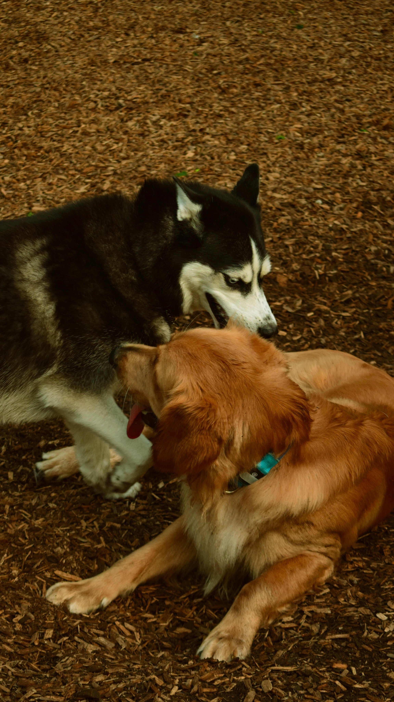

Some Favorite Images

My favorite comedy movie of all time is Big Bang Theory!
The sitcom is centered on five characters living in Pasadena, California: and a waitress and aspiring actress who lives across the hall from them.
Click here for more information on the movie!
I love listening to Afrobeat and Pop Music. Afrobeat developed in Africa in 1960's and 1970's and blends elements of Yoruba music, jazz and funk rhythms.
Olamide is my favorite Afrobeat artist. Here is his Youtube page
| Book Name | Author | Webpage |
|---|---|---|
| Becoming | Michelle Obama | Webpage here. |
| My life | Damilare Kuku | Bookstore. |